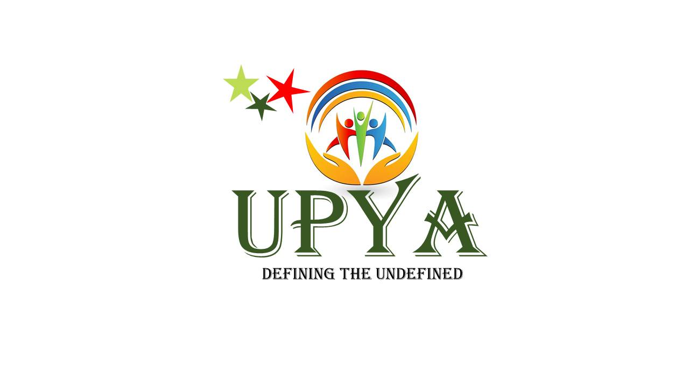
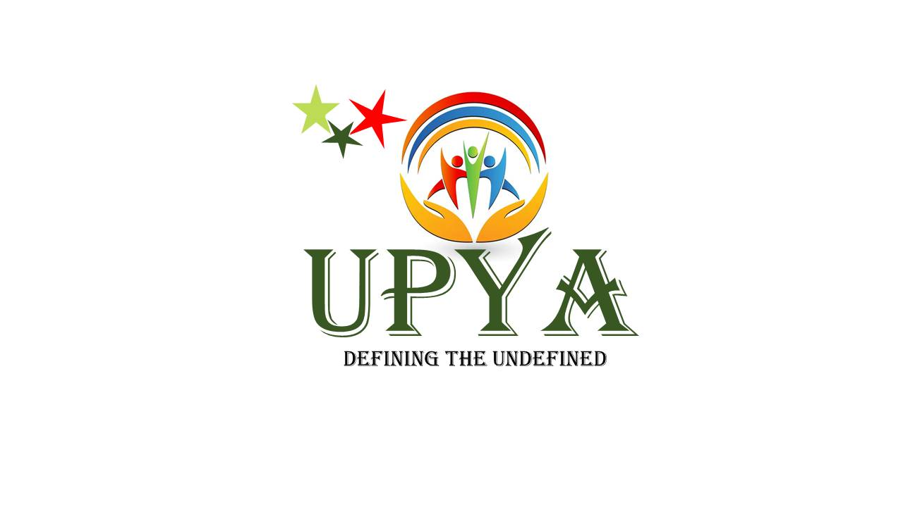

Background / About Us
Uwezo Pamoja Youths Association was founded with the vision of creating an environment that cultivates positive impact to the community. Recognizing the challenges faced by youths — including limited access to education, employment and personal development resources — we established this organization as a platform for growth, collaboration and advocacy. Through leadership training, mentorship, community service and skill development workshops, we equip young individuals with the necessary tools to succeed and take action towards positive change.
Mission & Vision
Mission: To empower, equip, mentor and nurture tomorrow's world.
Vision: Creating an environment that cultivates positive impact to the community.
Core Values
- Teamwork — working together for greater impact.
- Integrity — honesty and strong moral principles.
- Transparency — open and clear communication.
- Accountability — owning our actions and results.
- Equity — fair opportunities for all youths.
History
The incubation phase of Uwezo Pamoja Youths Association began in 2023, guided by a small group of motivated individuals who recognized the need for a dedicated platform where youths could express their ideas, develop leadership skills and participate in meaningful activities. In 2024 the association was formally founded with the primary goal of uniting, empowering, mentoring and equipping young people to take an active role in shaping their communities and future.

Gallery
 

Become a Member
Join Uwezo Pamoja Youths Association and be part of a movement that uplifts and empowers young people.
Contact & Socials
Email: upyakenya001@gmail.com
phone: 0742717364
Facebook: UPYA.kenya
YouTube: UPYA.kenya
Instagram: UPYA.kenya